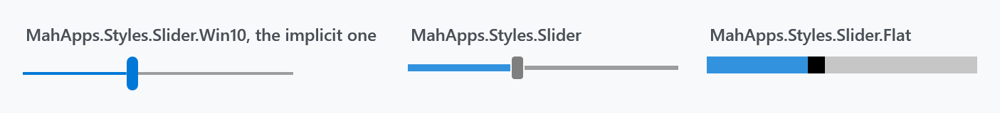
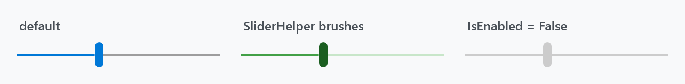
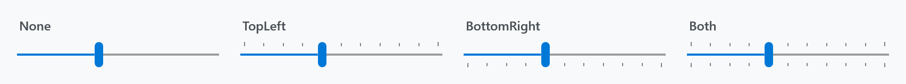
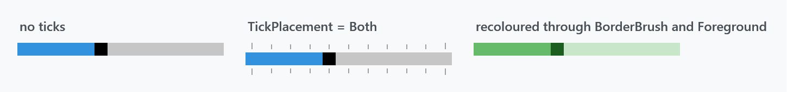
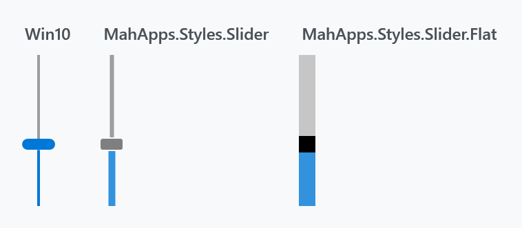
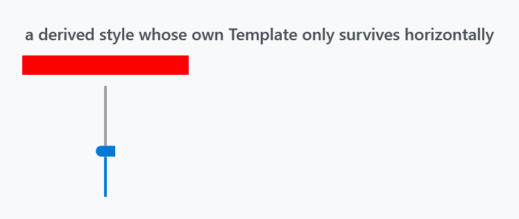

Three styles, all in Controls.xaml and all ready to use without loading anything extra.

| Style | |
|---|---|
MahApps.Styles.Slider.Win10 |
the implicit one — a 2px track and a tall rounded thumb |
MahApps.Styles.Slider |
a thicker track and a small grey thumb |
MahApps.Styles.Slider.Flat |
a solid block with a rectangular thumb cut into it |
Note which one is implicit. Styles/Controls.xaml applies MahApps.Styles.Slider.Win10 to every Slider — MahApps.Styles.Slider, despite the plainer name, is the one you have to ask for. Basing a style of your own on MahApps.Styles.Slider therefore changes the look as well as whatever you meant to change.
<Slider Width="190" Value="40" />
<Slider Width="190" Value="40" Style="{DynamicResource MahApps.Styles.Slider}" />
Both Controls.Slider.xaml and Controls.FlatSlider.xaml are merged by Controls.xaml, so the quick start is all the setup any of the three needs.
Besides the look, the Win10 style sets IsMoveToPointEnabled="True", which the other two leave at WPF's False: clicking the track jumps the thumb to where you clicked instead of paging by LargeChange.
All three set Minimum="0", Maximum="100" and Value="0", so a slider without a range still shows something sensible.
Colours
The Win10 and default styles get their colours from SliderHelper — twelve attached brushes covering the thumb, the track and the filled part of the track, each in a resting, hover, pressed and disabled variant.

<Slider Width="190" Value="40"
mah:SliderHelper.ThumbFillBrush="#FF1B5E20"
mah:SliderHelper.TrackValueFillBrush="#FF43A047"
mah:SliderHelper.TrackFillBrush="#FFC8E6C9" />
The styles fill in all twelve, so a slider recoloured with only the three above reverts to the theme colour under the pointer. Set the Hover and Pressed variants too if it should stay green while it is being dragged.
Foreground is not the track colour on these two — it is what the tick marks are drawn in.
Ticks
TickPlacement is off by default and needs TickFrequency to be worth switching on:

<Slider Width="190" Value="40" TickFrequency="10" TickPlacement="Both" />
The tick bars are part of the template, above and below the track, so turning them on makes the control taller rather than crowding the groove.
The flat style

<Slider Width="190" Value="40" Style="{DynamicResource MahApps.Styles.Slider.Flat}" />
This one is built differently and the difference shows when you try to change it. It sets OverridesDefaultStyle="True" and ignores SliderHelper completely — its three parts come from three ordinary properties of the slider:
Foreground |
the filled part of the bar |
Background |
the rest of it |
BorderBrush |
the thumb |
<Slider Width="190" Value="40"
Style="{DynamicResource MahApps.Styles.Slider.Flat}"
Foreground="#FF66BB6A"
Background="#FFC8E6C9"
BorderBrush="#FF1B5E20" />
BorderBrush for the thumb is easy to miss, and the same trap as above applies here in a sharper form: the style's own IsMouseOver trigger reassigns Background and Foreground from the theme, so a hand-coloured flat slider goes back to grey and accent the moment the pointer is over it. To keep a colour, base a style on this one and override the trigger rather than setting the properties on the control.
The bar is 12 units thick by default, from MahApps.Sizes.Slider.Flat.Horizontal.MinHeight, and the thumb is a square of that size. Its tick bars are its own — 6 units, in the disabled-thumb grey rather than in Foreground.
Vertical

<Slider Height="110" Orientation="Vertical" Value="40" />
Each style carries a second template and a trigger that swaps to it on Orientation="Vertical", so the thumb turns with the slider and the fill runs from the bottom.
That trigger is why a derived style cannot replace the template with a single setter. A Setter for Template is beaten by the inherited trigger's setter, so a custom template applies horizontally and is silently discarded the moment the slider is vertical:

<Style BasedOn="{StaticResource MahApps.Styles.Slider.Win10}" TargetType="{x:Type Slider}">
<Setter Property="Template" Value="{StaticResource MyTemplate}" />
<Style.Triggers>
<Trigger Property="Orientation" Value="Vertical">
<Setter Property="Template" Value="{StaticResource MyVerticalTemplate}" />
</Trigger>
</Style.Triggers>
</Style>
Repeat the trigger, as above, or drop the BasedOn and start from {x:Type Slider}.
Related
RangeSlider is the two-thumb version and uses the same SliderHelper brushes. The colour picker's channel sliders are MahApps.Styles.Slider.ColorComponent and its variants, which are not meant to be used on their own — see ColorPicker.